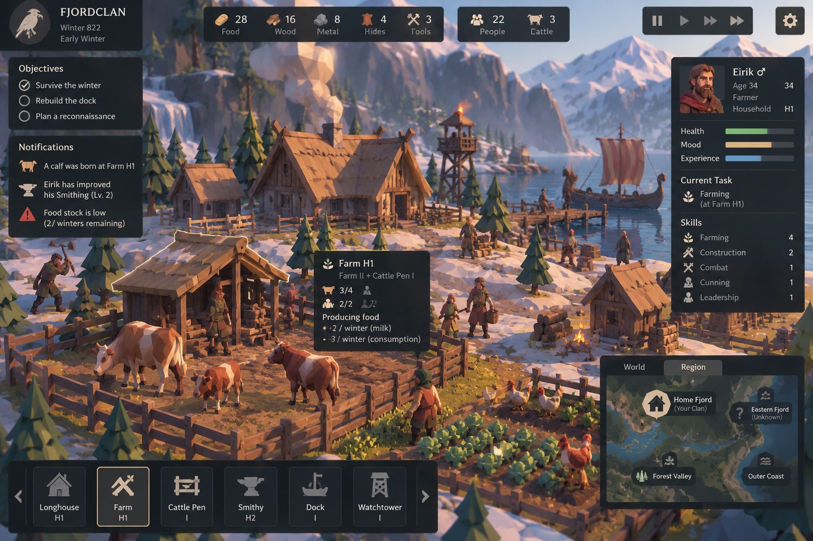

Matched seed 1983 · unchanged maps, placement, heights and camera · GrassField OFF · source materials intact. Owner visual acceptance pending.

The 10/20/30° sweep uses azimuth −57.3°, sky fill .65, sun 2.8, exposure 1.05. Front-light refinement uses azimuth +135°; fill .65/1 are separately captured. No HDR, new scenery, palette or roughness change in this stage.